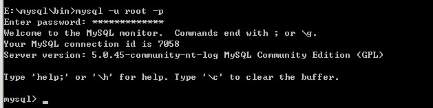

一、连接MYSQL
格式： mysql -h主机地址 -u用户名 -p用户密码
1、 连接到本机上的MYSQL。
首先打开DOS窗口，然后进入目录mysql\bin，再键入命令mysql -u root -p，回车后提示你输密码.注意用户名前可以有空格也可以没有空格，但是密码前必须没有空格，否则让你重新输入密码.
如果刚安装好MYSQL，超级用户root是没有密码的，故直接回车即可进入到MYSQL中了，MYSQL的提示符是： mysql>

2、连接到远程主机上的MYSQL。假设远程主机的IP为：110.110.110.110，用户名为root,密码为abcd123。则键入以下命 令：
mysql -h110.110.110.110 -u root -p 123;(注:u与root之间可以不用加空格，其它也一样)
3、 退出MYSQL命令： exit (回车)
二、修改密码
格式：mysqladmin -u用户名 -p旧密码 password 新密码。 例如
1、 给root加个密码ab12。首先在DOS下进入目录mysql\bin，然后键入以下命令
mysqladmin -u root -password ab12
2、 再将root的密码改为djg345。
mysqladmin -u root -p ab12 password ******
三、创建数据库
1、 CREATE DATABASE 数据库名;
2、 GRANT SELECT,INSERT,UPDATE,DELETE,CREATE,DROP,ALTER ON 数据库名.* TO 数据库名@localhost IDENTIFIED BY '密码';
3、 SET PASSWORD FOR
'数据库名'@'localhost' = OLD_PASSWORD('密码');
依次执行3个命令完成数据库创建。注意：中文 “密码”和“数据库”是户自己需要设置的。
—————————————————————————————————————————————
现在介绍一些常用的MYSQL命令
注意：你必须首先登录到MYSQL中，以下操作都是在MYSQL的提示符下进行的，而且每个命令以分号结束。
一、操作技巧
1、如果你打命令时，回车后发现忘记加分号，你无须重打一遍命令，只要打个分号回车就可以了。
也就是说你可以把一个完整的命令分成几行来打，完后用分号作结束标志就OK。
2、你可以使用光标上下键调出以前的命令。
二、常用命令
1、显示当前数据库服务器中的数据库列表：
mysql> SHOW DATABASES;
2、建立数据库：
mysql> CREATE DATABASE 库名;
3、建立数据表：
mysql> USE 库名;
mysql> CREATE TABLE 表名 (字段名 VARCHAR(20), 字段名 CHAR(1));
4、删除数据库：
mysql> DROP DATABASE 库名;
5、删除数据表：
mysql> DROP TABLE 表名;
6、将表中记录清空：
mysql> DELETE FROM 表名;
7、往表中插入记录：
mysql> INSERT INTO 表名 VALUES ("hyq","M");
8、更新表中数据：
mysql-> UPDATE 表名 SET 字段名1='a',字段名2='b' WHERE 字段名3='c';
9、用文本方式将数据装入数据表中：
mysql> LOAD DATA LOCAL INFILE "D:/mysql.txt" INTO TABLE 表名;
10、导入.sql文件命令：
mysql> USE 数据库名;
mysql> SOURCE d:/mysql.sql;
11、命令行修改root密码：
mysql> UPDATE mysql.user SET password=PASSWORD('新密码') WHERE User='root';
mysql> FLUSH PRIVILEGES;
三、一个建库和建表以及插入数据的实例
drop database if exists school; //如果存在sudu则删除
create database sudu; //建立库sudu
use school; //打开库sudu
create table teacher //建立表TEACHER
(
id int(3) auto_increment not null primary key,
name char(10) not null,
address varchar(50) default '深圳',
year date
); //建表结束
//以下为插入字段
insert into teacher values('','allen','飞数科技1','2005-10-10');
insert into teacher values('','jack','飞数科技2','2005-12-23');如果你在mysql提示符键入上面的命令也可以，但不方便调试。
(1)你可以将以上命令原样写入一个文本文件中，假设为sudu.sql，然后复制到c:\\下，并在DOS状态进入目录\mysql\bin，然后键入以下命令：
mysql -uroot -p密码 < c:\sudu.sql
如果成功，空出一行无任何显示;如有错误，会有提示。(以上命令已经调试，你只要将//的注释去掉即可使用)。
(2)或者进入命令行后使用 mysql> source c:\sudu.sql; 也可以将sudu.sql文件导入数据库中。
四、将文本数据转到数据库中
1、文本数据应符合的格式：字段数据之间用tab键隔开，null值用\n来代替.例：
3 rose 飞数科技1 1976-10-10
4 mike 飞数科技2 1975-12-23
假设你把这两组数据存为速度sudu.txt文件，放在c盘根目录下。
2、数据传入命令 load data local infile "c:\sudu.txt" into table 表名;
注意：你最好将文件复制到\mysql\bin目录下，并且要先用use命令打表所在的库。
五、备份数据库：(命令在DOS的\mysql\bin目录下执行)
1.导出整个数据库
导出文件默认是存在mysql\bin目录下
mysqldump -u 用户名 -p 数据库名 > 导出的文件名
mysqldump -u user_name -p123456 database_name > outfile_name.sql
2.导出一个表
mysqldump -u 用户名 -p 数据库名 表名> 导出的文件名
mysqldump -u user_name -p database_name table_name > outfile_name.sql
3.导出一个数据库结构
mysqldump -u user_name -p -d --add-drop-table database_name > outfile_name.sql
-d 没有数据 --add-drop-table 在每个create语句之前增加一个drop table
4.带语言参数导出
mysqldump -uroot -p --default-character-set=latin1 --set-charset=gbk --skip-opt database_name > outfile_name.sql